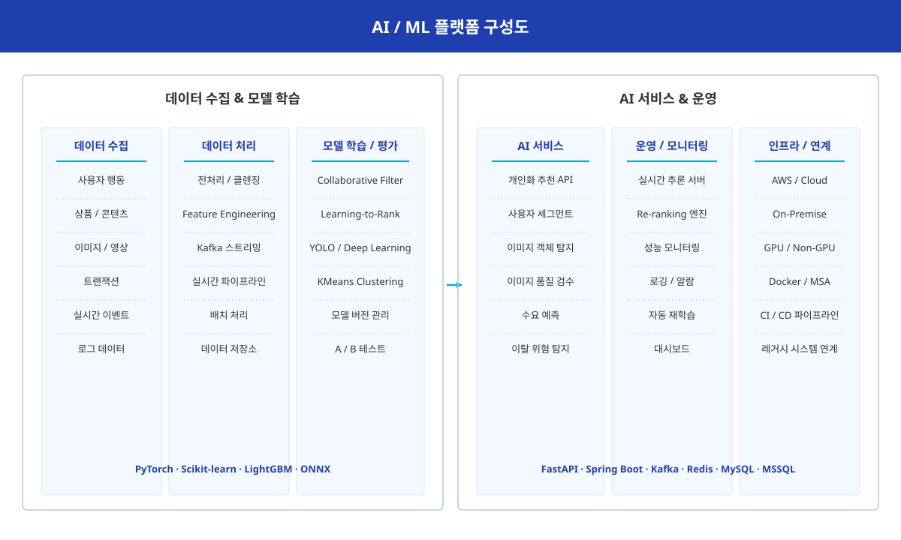

AI & ML Solutions 개요
당사는 단순한 모델 개발이 아닌, 실제 서비스 운영 환경에서 안정적으로 동작 가능한 AI/ML 플랫폼 구축을 제공합니다.
추천 시스템, 사용자 행동 분석, 수요 예측, 이미지 분석 등 다양한 영역에서 실무 중심의 머신러닝/딥러닝 기술을 활용하여 비즈니스 성과를 극대화합니다.
-
개인화
추천 시스템 -
사용자
행동 분석 -
AI
이미지 분석 -
AI 플랫폼
운영 -
머신러닝
모델 학습 -
데이터
파이프라인 -
클라우드
인프라 -
실시간
API 서비스 -
운영
모니터링
주요 AI 솔루션 소개
엠투엠글로벌은 추천, 분석, 이미지, 플랫폼 운영까지 End-to-End AI/ML 솔루션을 제공하며, 실제 운영 환경에 안정적으로 적용 가능한 기술 파트너 역할을 수행합니다.

-
개인화 추천 시스템
- Collaborative Filtering
- Content-Based Recommendation
- Co-visitation Recommendation
- Learning-to-Rank
- Hybrid Recommendation
- Real-time Re-ranking
-
사용자 행동 분석 & 클러스터링
- KMeans Clustering
- Similarity Analysis
- Feature Engineering
- Virtual Interest Category
- User Segmentation
- 이탈 위험 사용자 탐지
-
AI 기반 이미지 분석
- YOLO 기반 객체 탐지
- ONNX Runtime 최적화
- 경량 AI 모델 운영
- 실시간 이미지 검증
- 상품 이미지 검수
- 자동 품질 검사
-
AI 플랫폼 아키텍처
- End-to-End 운영 구조
- Kafka 기반 이벤트 처리
- MSA 아키텍처 지원
- 배치 / 실시간 학습
- 모델 버전 관리
- 모니터링 / 로깅
-
추천 API 서비스
- 실시간 추천 처리
- 배치 기반 추천 생성
- 대용량 트래픽 대응
- 다양한 시나리오 지원
- A/B 테스트 환경
- REST API 제공
-
데이터 파이프라인
- 데이터 수집 파이프라인
- 실시간 이벤트 처리
- 배치 학습 시스템
- Feature Store
- 데이터 검증 / 품질 관리
- ETL 자동화
-
운영 환경 최적화
- On-Premise 지원
- AWS / Cloud 지원
- GPU / Non-GPU 환경
- 대용량 데이터 처리
- Docker 컨테이너 기반
- 오토스케일링
-
모니터링 & 운영
- 실시간 성능 모니터링
- 모델 드리프트 감지
- 자동 재학습 트리거
- 로깅 및 알람
- 대시보드 제공
- SLA 관리
AI 솔루션 구축 방법론
총 5단계의 체계적인 분석과 설계 프로세스를 통해 신속한 구축과 안정화된 모델 학습/운영을 진행합니다.
AI 시스템
구축 프로세스
- 데이터 분석
- 파이프라인 설계
- 모델 학습
- 서비스 배포
- 운영 모니터링
다양한 운영 환경에 대응 가능한 구조를 제공하여 고객의 환경에 맞게 최적화 합니다.
운영
환경 지원
- Cloud
- On-Premise
- GPU / CPU
AI 핵심 기술 스택
검증된 오픈소스와 클라우드 인프라를 활용하여 안정적이고 확장 가능한 AI 서비스를 제공합니다.
-
Backend
개발 기술 -
AI / ML
학습 기술 -
Data
처리 기술 -
Infra
운영 기술
-
-
01
-
Backend Framework
Java · Spring Boot · Python · FastAPI
-
-
-
02
-
AI / ML 라이브러리
PyTorch · Scikit-learn · LightGBM · ONNX Runtime
-
-
-
03
-
데이터 처리
MySQL · MSSQL · Redis · Kafka
-
-
-
04
-
인프라 / 운영
AWS · Docker · Linux · Nginx
-
-
-
05
-
구축 가능 분야
AI 추천 · 커머스 · 스마트 물류 · 수요 예측
-
-
-
06
-
분석 / 최적화 분야
고객 행동 분석 · 재고 최적화 · 이미지 분석
-